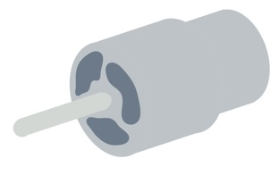
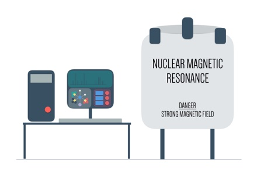

Research Events and Workshops
3D Printing
Scanning Electron Microscope
3D printing
3D printing or Rapid Prototyping (RP) is an up and coming technology that has made tremendous breakthroughs in the industries at this day and age. Such technologies have essentially accelerated many production processes as well as equipped industries in printing specific shapes and sizes with relative ease. The versatility of RP has allowed for many different fields to explore and expand their boundaries.
In this workshop, students will be tasked to design and print their very own 3D model and photolithograph that would enable students to visualize beyond just sensory information.
Scanning Electron Microscope
In this workshop, students will learn the basics of how a scanning electron microscope (SEM) works. Students will utilise the skills learnt in operating the SEM to take micrographs, which will be printed and put on display at a micrography exhibition cum competition. The theme for this year’s micrography competition is Patterns. Students are expected to come prepared with samples they wish to micrograph.
There are two categories for the in-house competition: primary and secondary. Prizes will be awarded to the top 3 entries of the competition. Winning entries may be sent for an external micrography competition organised by the National University of Singapore.
Computer Programming
1: Computational thinking is a problem solving process that is essential to the development of computer applications. It is also seen as an important problem solving skill that supports many other disciplines including math, science, and the humanities. In this workshop, students will learn the basics of computational thinking as they are taught to program a short animated story in Scratch.
2A: In this workshop, students will learn the basics of computational thinking as they are taught how to write simple Python code in order to solve questions in mathematics that are often taken for granted. For example: how do you efficiently determine the square root of a number?
2B: Often, computers are used to perform specific tasks defined by programmers. However, there are many problems that are far too dynamic in nature to be handled by (for the most part,) deterministic instructions. Consequently, in order to solve such problems, we must write learning programs. Machine learning algorithms utilise data in order to generate hypotheses, which are in turn used to allow programs to make decisions. Some examples of the application of machine learning include credit card fraud detection, the classification of DNA sequences, game playing, autonomous cars, and search engines. In this workshop, attendees will be introduced to the classification problems, the decision tree algorithm, and will learn to apply it to solve a simple learning problem. All programming will be done using the Python programming language.
Sigma Science Day
Sigma Science Day is one of the programmes organised by the South Zone Cluster Schools’ Science Committee to heighten students’ interest in science. Sigma Science Day culminates an exciting Sigma Science Week of workshops conducted by professors, partners and ex-students, talks given by faculty from various varsities, and exhibitions that demonstrate the latest developments in the various groups of engineering. [Read More]
Sigma Science Day
The theme for this year’s Sigma Science Day is “Time Travel”, where participants from primary and secondary schools in the South Zone engaged in an amazing race type of challenge. This saw the groups racing to complete booth activities relating to scientific discoveries in the past and future, which culminated in the final challenge in building a robot out of Lego bricks to navigate on Mars.
Congratutions to Ai Tong School for clinching Top Primary School Award and Holy Innocents’ High School for clinching Top Secondary School Award!
Gallery
Balmer Series and Bohr’s atomic model
Soon after the introduction of spectral analysis in the 19th century, an empirical relation for the wavelengths of spectral lines of hydrogen atoms was found (Rydberg formula). The physical reason for this relation only became clear with the introduction of a naive quantum mechanical model of the hydrogen atom by Niehls Bohr (Nobel Prize 1922). While Bohr’s atomic model is not quite right from today’s perspective, it introduces key characteristics of quantum physics (e.g. de Broglie waves, Nobel prize 1929) at a level that is within JC students’ reach.
In this workshop, participants will use a diffraction setup to determine the wavelengths of spectral lines emitted by a hydrogen lamp. Through data analysis, they will be able to determine the Rydberg constant and even identify the quantum numbers of the atomic energy levels involved in the light emission process.
4th S3 Life Sciences Enrichment Workshops
The S3 Life Sciences Enrichment Workshops 2016 is a programme co-organised by Sigma Labs, South Zone Science & Technology Centre with ACS (Primary) to raise students’ awareness and interest in the Life Sciences. The series of 8 workshops will focus on Life Sciences activities and experiments and is open to High-Progress students from Primary 5 classes in the S3 cluster primary schools.
Participating students can look forward to completing various scientific tasks, experiments and hands-on challenges relating to the theme of Life Sciences. Through their participation, it is hoped that students will appreciate the academic and humanistic aspects of the Life Sciences and enjoy the process of exploring and enquiring science through fun and engaging experiences.
Optical Spectroscopy
Spectroscopy is a class of techniques that investigates how radiation (such as, but not limited to light) is affected by interactions with matter. Our understanding of the micro- and macro-cosmos is largely based on spectroscopic observations. Spectroscopic techniques are also everyday characterization tools in materials science, chemistry, physics, life sciences, astronomy, and more and are taught early in chemistry.
This workshop has close links to our workshops on diffraction and Bohr’s atomic model, but focuses on qualitative characteristics of optical spectra and how they are linked to the atomic/molecular structure of materials. Participants will be able to bring home their spectroscopes to research on other light sources.
How Things Work: DC Motor

Electromagnetism has created a revolution not only in the field of engineering, but also in various other fields like medicine, space, and construction. Electric fan, electric door bell, microphones, electric guitar, mobile phones, magnetic resonance imaging (MRI), power generators: these are just some examples that illustrates the usefulness of electromagnetism in every day life.
In this workshop, students will first learn basic principles of electromagnetism followed by the workings of electric motor by building their own. They will also have the opportunity to explore DIY speakers.
Fuel Cells
Fuel cells, like batteries, are electrochemical generators that can power electrical devices. Unlike batteries, the fuel is replaceable/ refillable. By avoiding the moving machinery of the regular generators fuel cells can be more energy efficient. By doing away with disposable parts and choosing the right fuel, waste products and carbon emissions can be greatly reduced or even completely eliminated.
Well established in the high-tech sector such as spacecraft construction for decades, fuel cells are becoming more main stream and hold great promises in today’s global relentless search for the demand and supply of clean energy.
In the workshop, participants will get an overview of different fuel cell technologies and investigate the operation and characteristics of a hydrogen-powered proton membrane exchange (PEM) fuel cell.
Advanced Instruments

Critical to deep analysis of any research project, advanced instrumentation is one of the cornerstones of any research establishment. Further, advanced instrumentation can be leveraged to deepen the teaching and learning of science by bringing to life the ideas that are only alluded to or simply discussed in textbooks.
In this teacher-targeted workshop, we review fundamental spectroscopic and analytical methods, engage participants in carrying out mini-experiments and reflect on how we can make the teaching of science even more exciting through the use of advanced instrumentation.